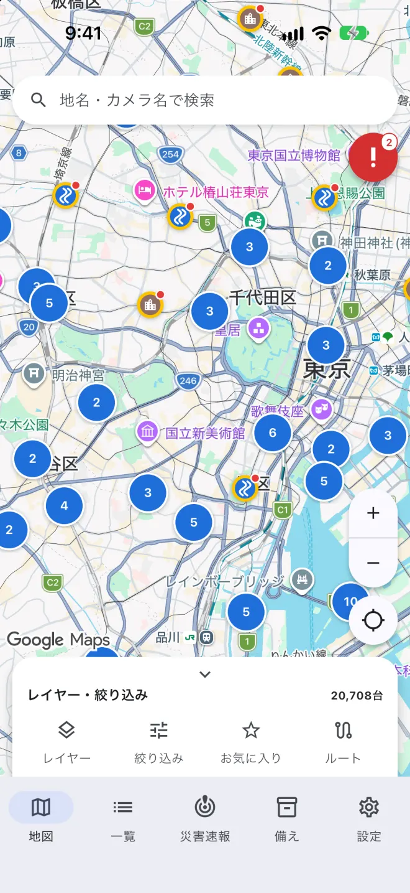
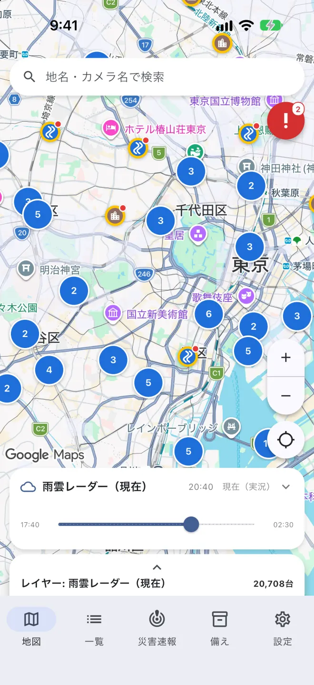
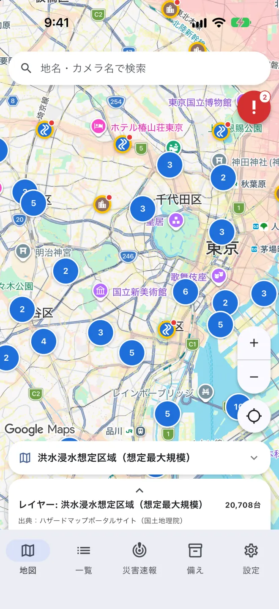
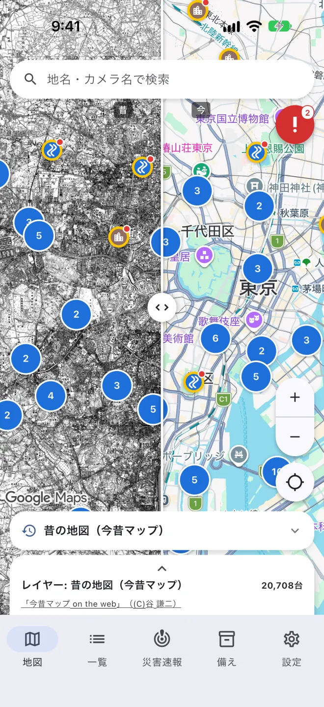
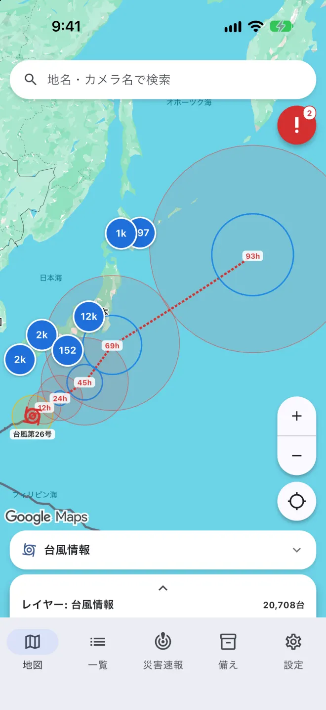

A
台風・大雨の日の、
近くの川。
河川カメラは約13,600台。雨雲レーダーや24時間降水量を重ねて、雨と川の様子を一度に確認できます。
RIVERNATIONWIDE LIVE CAMERA MAP — JAPAN
河川・道路・海岸・火山。国や自治体、放送局が公開する約23,100台のライブカメラを、ひとつの地図から見られます。無料・登録不要です。
雨雲レーダー、キキクル、ハザードマップ、100年前の地形図、道路の通行止め。気象庁や国土地理院が公開するデータを、カメラと同じ地図に重ねられます。





ピンの記号でカメラの種類がわかります。動画カメラには赤い点、お気に入りには星が付きます。
過去の雨雲から6時間先の予報までを、スライダーで切り替えられます。
国土地理院「重ねるハザードマップ」の区域と、指定緊急避難場所を表示します。
明治・大正の地形図と今の地図を、境界線を動かして見比べられます。
予報円と暴風警戒域を地図に描き、進路にあるカメラをすぐ開けます。
特別警報・危険警報、台風、指定河川洪水予報、震度4以上の地震。気象庁の発表を10分ごとに確認し、発表中のものだけを右上のボタンに表示します。プッシュ通知は地域と警戒レベルを選んで受け取れます。
河川カメラは約13,600台。雨雲レーダーや24時間降水量を重ねて、雨と川の様子を一度に確認できます。
RIVER国道・県道の道路カメラは約4,600台。通行止めや規制の区間も地図に表示します。
ROAD行き先を入力すると、経路の近くにあるカメラを出発地から順に表示します。
ROUTE海岸や港のカメラで、サーフィンや釣りに出かける前に海の様子を確認できます。
COAST運営元の公式YouTube配信をアプリ内で再生できます。海外の絶景カメラも収録しています。
LIVE全国の指定緊急避難場所を災害の種類ごとに表示します。備蓄品のチェックリストも使えます。
READYiPhone（iOS 17以上）とAndroidに対応しています。App StoreまたはGoogle Playで「全国ライブカメラ地図」を検索してください。